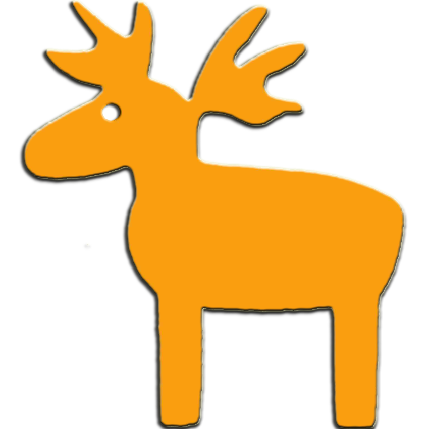

读书
生活
绘画
厨房
科研
技术
标签
归档
关于
2016年阅读书单
2015年阅读书单
每个人的金线
读《红楼梦》
2014年阅读书单
2013年阅读书单
2012年阅读书单
2011年阅读书单
2010年阅读书单
吉他上弦枕的DIY调节
找工作总结
学不会
致友人书
Seeker的回信
租房奇遇记
海岸公路
坐在露天酒吧
午后的操场
小礼物Little Lady
与亚敏走在石像路
一只猫
黑椒牛排
煎蛋吐司
黄豆焖猪手
葱油鲤鱼
油爆虾
绿豆百合羹
从二次型最优化问题中理解矩阵特征值的意义
牛顿法与拟牛顿法（DFP BFGS LBFGS VLBFGS）
大数据机器学习初探---南大李武军
我的报告 Decentralized Privacy-Preserving Low-Rank Matrix Completion
凸优化的一些基础算法
什么是 P, NP, NP-complete, NP-hard
阿里巴巴大数据竞赛回顾与总结
Matlab科研小贴士
动态一致平均问题算法-EXTRA和DAC
对于一致平均问题的理解
各类范数
低秩矩阵补全
Mac以及Windows上搭建C++工作环境
Git常用命令速查表
在Mac上用LaTeX写漂亮的简历
Yosemite OS X 10.10 Matlab 2012a停止工作的解决办法
Mac安装unrar和rar解压缩工具
Linux 4：磁盘与文件系统管理
Linux 3：文件与目录管理
Linux 2：文件权限与目录配置
Markdown输入LaTeX数学公式
Linux 1：登陆与在线求助man page
Linux 0：实际问题
Mac远程桌面连接Windows
在Mac上通过Sublime、Skim编辑LaTeX
LaTeX beamer制作幻灯片